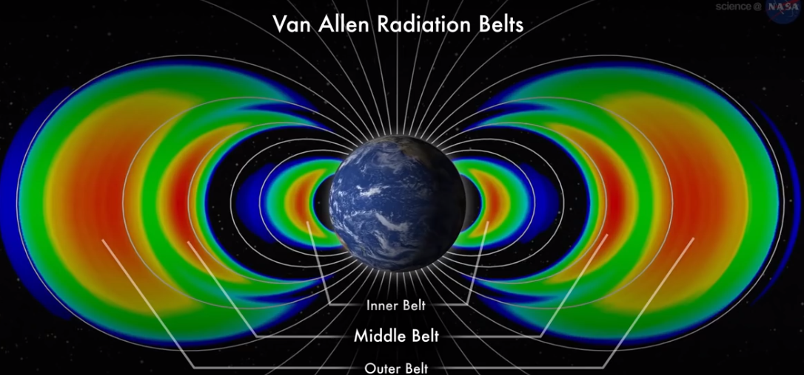
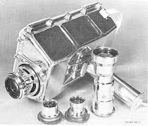
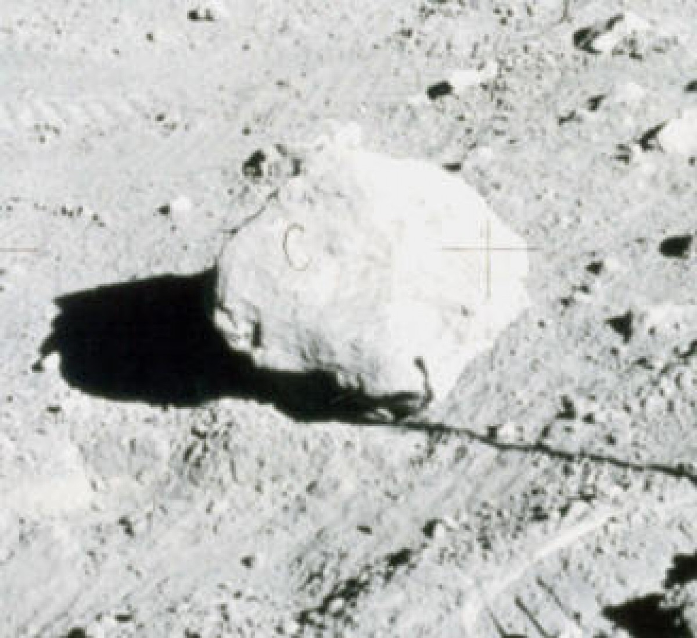
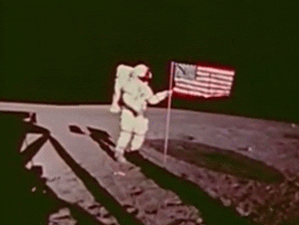

If the moon landings were real, then how did NASA deal with the Van Allen belts? For those who don’t know, the Van Allen Belts are donut shaped magnetic fields surrounding the earth. The Van Allen belts are charged particles, which are a form of radiation. The Van Allen belts are made of the sun’s solar winds, which react with the earth’s magnetic field. Another name for this type of radiation is ionising radiation. Which means that it has enough energy to knock off electrons from atoms, that make up a spacecraft and the people inside. Which can cause tissue damage. Fortunately, radiation takes time to react with the human body, meaning that a short exposure will fade away. While a long exposure will cause a lot of damage. So, how did NASA apparently solve this problem? They apparently went around it. Since the Van Allen belts are the thickest around the earth, and thinner in the poles, the Spacecraft, just flew over it.

Movie Set
Many people consider that the moon landings were stage on a movie set. Well let's explore how true that is. Many filmmakers, think that back in 1969, they did not have the technology to fake it on video. In the mists of the cold war, film technology made video wide, and were trying to integrate color. Due to the moon landings being in slow motion, if they did fake the moon landing, they would've needed to use overcranking. Overcranking is when you record a video super fast, and play it at normal speed, creating a very realistic video. But to do this, they would've needed high speed camera, to record the video. But in 1969 there were no high speed cameras. In Apollo 11, the camera’s they used were designed to record slow motion, which is why the video was so slow. Some people think that NASA, hired Stanley Kubrick to film the moon landings, to avoid humiliation from the american public. When we see the moon landings, we can see that the astronauts were in slow motion, if the slow motion was recorded on earth, it would have not been possible, as there weren’t any high speed cameras, to record back then. High speed cameras are need to record movies super fast and play it back at normal speed, in order to show it in slow motion. This means that, unfortunately, it would be impossible to record the video.

The C rock
Ah yes, what about the infamous ‘C’ rock? That has to be fake. NASA, exclaimed that the original photo did not even have the letter ‘C’ in it. The story goes, when the astronauts, took the photo, it didn’t have the letter ‘C’ in it. When they brought it down, and the photos were developed, a piece of string of hair must've gotten into the machine when it was copied. To me, this is the most likely way that NASA failed covering the moon landing. This is because we have the least amount of information given to us by NASA and others working at that time about the rock. It doesn’t specify what machine they used, or any techniques they used. It seems that they are missing critical data.

Flag not waving
When we view the video footage from the Apollo 11 landing, we can see the flag waving in the background, of the non-existent lunar breeze. Explain that NASA! Many scientists speculate that, the flag was on a telescoping rod along the top to keep it extended, but it won't extend all the way forward. So when the astronauts they had a difficult time to planting the flag. The struggle to keep it upright, meant that the flag was shaking vigorously. The moon does not have an atmosphere, but it does have a gravity, about ⅙ of earth’s. Which means that “a well shaken banner will wave”. Well does the flag still remain there today? According to NASA, no, unfortunately during the ascent phase of the Lunar Module, the entire flag was blown over. If you ask me, this seems a bit sketchy.

No Stars
If you see the images from Apollo 11, you can clearly see that there are no stars there. Why aren’t there any stars NASA?! Apparently, the astronauts used several cameras during the operations, mounted to their spacesuits. These were just film cameras, so they had to be set in order to get good quality photos. The astronauts only took photos in the day, so that the sun could luminate the sky. This meant that the astronauts had to expose their cameras to the very bright lunar surface, creating over-exposure. This was balanced though the settings of the camera. This also meant that the stars in the background would be non-existent. Alright, we gotta give NASA credit, this seems possible.
The Most Likely Scenario
The most likely scenario to me seems as the US actually did go to the moon, and the Russians lost their title of global superpower. This is because much of the evidence that we have, the Van Allen radiation belt, the movie set, the ‘C’ rock, the flag not waving and no stars in the sky, all can be debunked. They all have valid justification. The Van Allen belts only cover the earth horizontally, meaning that the astronauts could of just flew above them; escaping the dangerous radiation. Filming the movie would of been impossible due to the physical limitations of the equipment back then. They did not have the large enough film to film it all. Nor have any high speed cameras to play the film slow. The ‘C’ rock is passable, because we have the previous and the edited photo, not to mention that the technology back then was so obsolete that something like a piece of hair or string could of caught in it. The stars could not of been seen as the cameras were set to only capture the astronauts. If they were preconfigured to show the astronauts and the stars, the image would be a white blurred as the overexposure of light in the image. The moon landing wasn’t faked, the evidence provided by NASA and other scientists, we can see that, most likely, the moon landings were real.